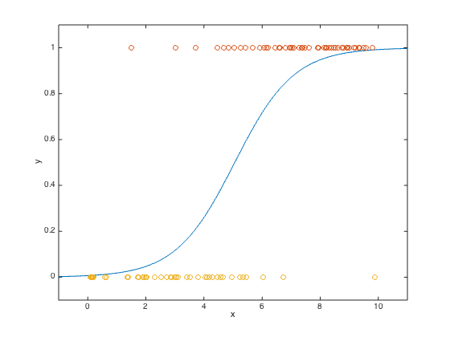

% Section 7.1.1 % Boyd & Vandenberghe, "Convex Optimization" % Original by Lieven Vandenberghe % Adapted for CVX by Argyris Zymnis - 01/31/06 % % We consider a binary random variable y with prob(y=1) = p and % prob(y=0) = 1-p. We assume that that y depends on a vector of % explanatory variables u in R^n. The logistic model has the form % p = exp(a'*u+b)/(1+exp(a'*u+b)), where a and b are the model parameters. % We have m data points (u_1,y_1),...,(u_m,y_m). % We can reorder the data so that for u_1,..,u_q the outcome is y = 1 % and for u_(q+1),...,u_m the outcome is y = 0. Then it can be shown % that the ML estimate of a and b can be found by solving % % minimize sum_{i=1,..,q}(a'*u_i+b) - sum_i(log(1+exp(a'*u_i+b))) % % In this case we have m = 100 and the u_i are just scalars. % The figure shows the data as well as the function % f(x) = exp(aml*x+bml)/(1+exp(aml*x+bml)) where aml and bml are the % ML estimates of a and b. randn('state',0); rand('state',0); % Generate data a = 1; b = -5 ; m= 100; u = 10*rand(m,1); y = (rand(m,1) < exp(a*u+b)./(1+exp(a*u+b))); plot(u,y,'o') axis([-1,11,-0.1, 1.1]); % Solve problem % % minimize -(sum_(y_i=1) ui)*a - b + sum log (1+exp(a*ui+b) U = [ones(m,1) u]; cvx_expert true cvx_begin variables x(2) maximize(y'*U*x-sum(log_sum_exp([zeros(1,m); x'*U']))) cvx_end % Plot results and logistic function ind1 = find(y==1); ind2 = find(y==0); aml = x(2); bml = x(1); us = linspace(-1,11,1000)'; ps = exp(aml*us + bml)./(1+exp(aml*us+bml)); dots = plot(us,ps,'-', u(ind1),y(ind1),'o',... u(ind2),y(ind2),'o'); axis([-1, 11,-0.1,1.1]); xlabel('x'); ylabel('y');
Successive approximation method to be employed. For improved efficiency, SDPT3 is solving the dual problem. SDPT3 will be called several times to refine the solution. Original size: 600 variables, 202 equality constraints 200 exponentials add 1600 variables, 1000 equality constraints ----------------------------------------------------------------- Cones | Errors | Mov/Act | Centering Exp cone Poly cone | Status --------+---------------------------------+--------- 200/200 | 6.970e+00 2.483e+00 0.000e+00 | Solved 200/200 | 9.608e-01 7.319e-02 0.000e+00 | Solved 199/200 | 1.067e-01 8.487e-04 0.000e+00 | Solved 200/200 | 9.296e-03 6.366e-06 0.000e+00 | Solved 0/127 | 3.203e-04 6.392e-09 0.000e+00 | Solved ----------------------------------------------------------------- Status: Solved Optimal value (cvx_optval): -32.9797
